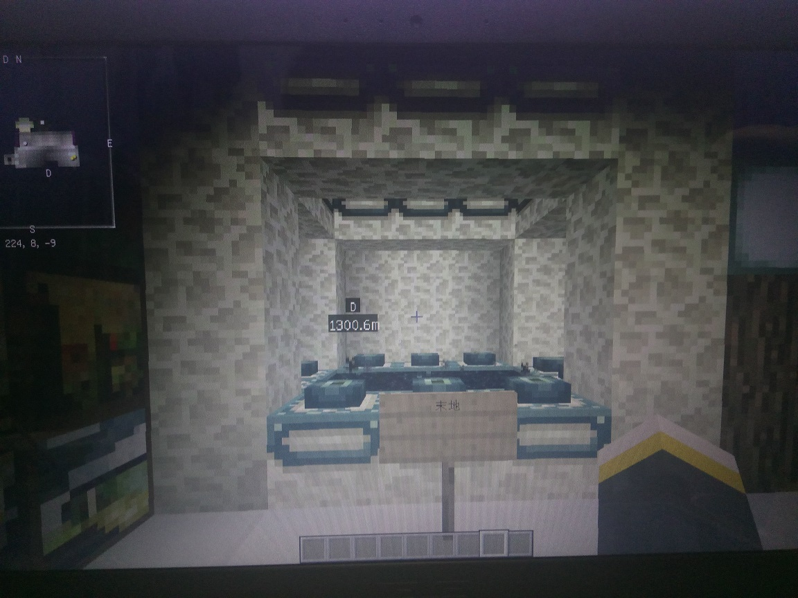
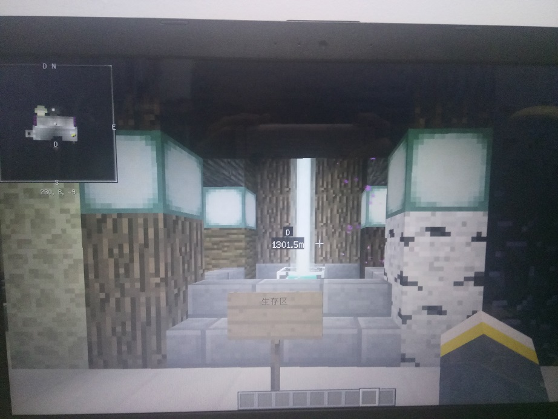
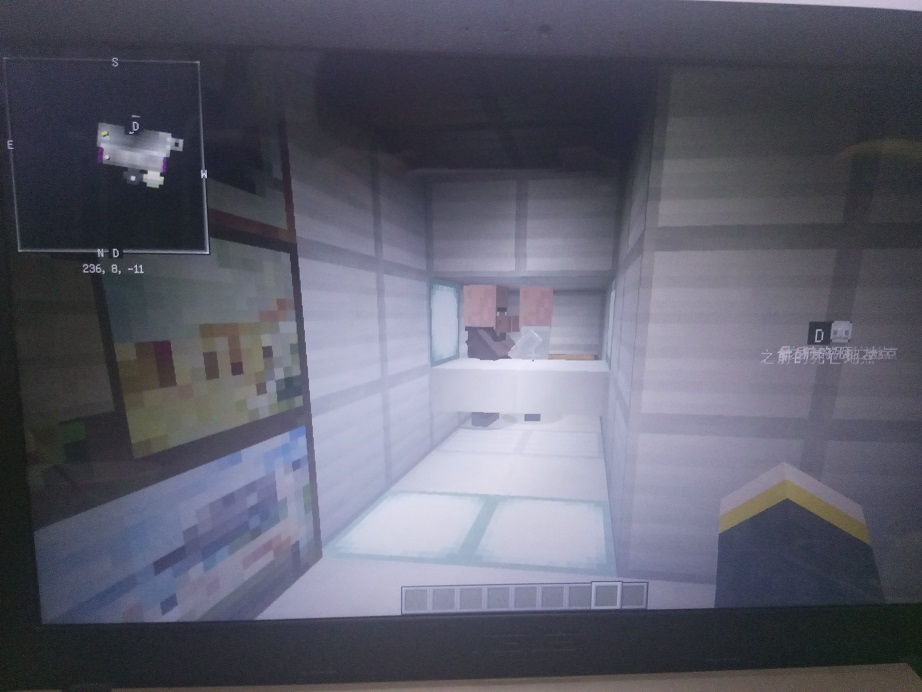
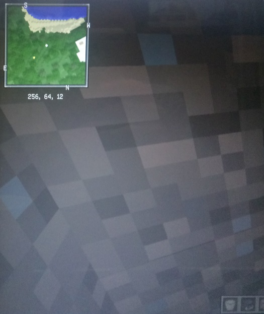

第一章
腐竹大大 你好

2017年5月24日
记得在大概八天前在skinme上看到联机侠的广告，介绍中说腐竹不用挂机，玩家24小时都可以连进服务器。第一次接触【联机侠】，因为能轻松而且免费就可以拥有自己的服务器，对于一个热爱mc的学生党来说，这无疑是一个不可错失的好机会，那是正直暑假，自然时间很多，所以我的腐竹mc计划开始了....第一件事就是了解这个“联机侠软件”，随着不断的深入，最后得出了以下结论：
（以上信息考虑作者记忆不好，可能会与真实情况稍有出入，敬请原谅！）
【1】服务器的确是免费的，如果是和志同道合的小伙伴联机一起生存的话，可以说这是目前最完美的选择。
【2】不仅满足了基本的联机生存，这款软件还提供给了一键添加插件mod，这样让多元化mc联机生存创造了更多可玩性。
【3】体积小，功能齐全，配备后台控制，界面简洁，小白稍加探索也能轻松驾驭。
【4】最后，他把玩家开的服务器展现在首页，让玩家们互相加入到自己的游戏，互相支持。
【5】其中：在"联机大厅里把你的服务器放出来，需要在别人的服务器（房间）“挂机”挂满五天，才能开放出来，其中这五天只有你不可以进这个服务器，当在线满七天的时候，你的服务器即可开放出来，所以这相当于给你两天的“准备时间”之后就是如果每天都挂机，能进入你的服务器的玩家就可以越多（同时在线）。
↓↓↓

↓↓↓
很像有木有！！其实这是我要建的其中一个主城（生存主城），游历了各大游戏服务器，私服公服，要看这个服务器好不好吸引不吸引人，主城首当其冲！就像你给别人的第一次.....印象！
↓↓↓
挂了五天的机，终于可以上游戏了，第一时间就是搞主城，计划修在地下，并用基岩严密地包裹外层，加上上下拉开的门实验失败，特么这废了我极大的功夫！老天！谁知道我经历了什么！最后完成基本轮廓之后开始各种建筑细节。
【出生点】
【壁画（右）】
【壁画（左）】
【附魔台（图书馆）】
【传送点（末地）】
【传送点（生存世界）】
【传送点（地狱）】
【主城交易所】
【全景】
【生存世界主城】
【生存世界传送点（完美小岛）】
【建城计划规划】
(这是那时我写下的一些记录)
一开始想到的是要实现三大原则：【一】全部人出生点设置在主城；
【二】苦力怕爆炸不破坏地形；
（虽然可添加插件，但插件容量有限，能省一个是一个）；
【三】死亡不掉落。
（到现在为止，还未能解决！…用网上的激活命令方块来设置和手动输入设置应该是一样的，特么就是不行！！连自己的出生点也有时乱有时可以）
主要是二和三。希望明天的插件可以解决这三大问题！！
今天还完成了一项非凡的工程，生存区基地的建设！！里面设置了生存点传送，商店，现在预想插件会用到4-5个，金钱和商店应该是分成两个插件，这样插件容量就满了，还要领地插件，锁箱子插件，商店金钱应该和一键砍树插件一起放在后续发展。在群里看到清道夫，防高频红石的文件，下次留意下。
【生存世界选址1（激光校对）】
【生存世界选址2（传送测试）】
【生存世界随机传送选址1】
【生存世界随机传送选址2】
【地下主城选址】
【小地图插件（224，62，409）分别为xyz空间坐标】
【生存世界地牢传送选址】
【服务器后台（初始化世界中）】
【登陆插件出现问题】
之后发现原来服务器在没有人在线的情况下会自动休眠，即在没有用联机侠开启服务器时，用ip直连是无法连接上的。所以如果想要吸引更多的人来玩，也只能在联机侠里互相吸引。